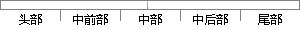

此时语音处于过渡状态，如果当前帧的短时帧能量小于所设定的短时帧低门限且当前帧的短时平均过零率小于所设定的短时帧平均低过零率，则状态不变（静音状态）。
片段位置图

相似结果|
相似片段 1：平均能量和短时平均过零率的数值很高，但是往往不能维持足够长的时间，如门窗的开关、物体的碰撞等引起的噪声，这些都可以通过设定最短时间门限来判别。当前状态处于语音段时，如果两个参数的数值降低到低门限以下，而且总的记时长度都小于最短时间门限，则认为这是一段噪音，继续扫描以后的语音数据。
相似片段 2：也可以引起短时能量或过零率的数值很高，但是往往不能维持足够长的时间，如门窗的开关、物体的碰撞等引起的噪声，这些都可以通过设定最短时间门限来判别。当前状态处于语音段时，如果两个参数的数值降低到低门限以下，而且总的计时长度小于最短时问门限，则认为这是一段噪音，继续扫描以后的语音数据。
相似片段 3：，进入过渡段。在过渡段时当短时平均能量和短时平均过零率两个参数值都回落到低门限以下，就将当前状态恢复到静音状态，而如果在过渡段中两个参数中的任一个超过高门限，则被认为进入语音段。在语音段时，如果两个
|
※ 片段修改建议 ※
近似词参考：- 状态：状况
- 如果：若是 假如 要是
- 平均：均匀
- 平均：均匀
- 状态：状况
- 不变：稳定
- 状态：状况
系统自动生成语句： 此时语音处于过渡状况，若是当前帧的短时帧能量小于所设定的短时帧低门限且当前帧的短时均匀过零率小于所设定的短时帧均匀低过零率，则状况稳定（静音状况）。
注：本片段修改建议为系统自动生成，仅供参考。